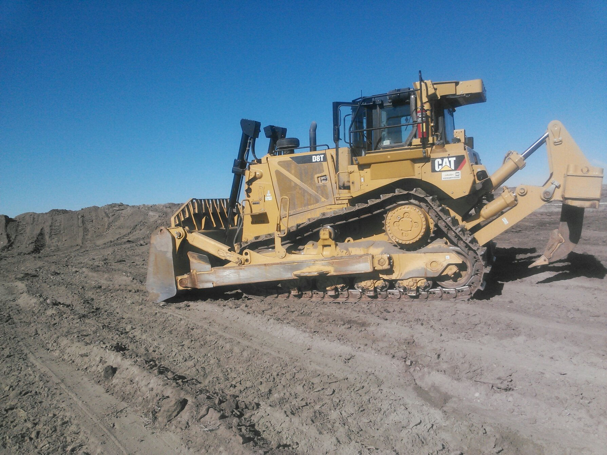
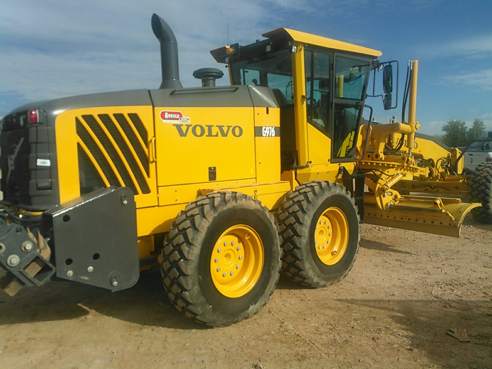

Bulldozers have been further modified over time to evolve into new machines which can work in ways that the original bulldozer cannot.
One example is that loader tractors were created by removing the blade and substituting a large volume bucket and hydraulic arms which can raise and lower the bucket, thus making it useful for scooping up earth and loading it into trucks, these are often known as a Drott.
A grader, also commonly referred to as a road grader, a blade, a maintainer, or a motor grader, is a construction machine with a long blade used to create a flat surface during the grading process. Typical models have three axles, with the engine and cab situated above the rear axles at one end of the vehicle and a third axle at the front end of the vehicle, with the blade in between. In certain countries, for example in Finland, almost every grader is equipped with a second blade that is placed in front of the front axle. Some construction personnel refer to the entire machine as "the blade". Capacities range from a blade width of 2.50 to 7.30 m and engines from 93–373 kW (125–500 hp). Certain graders can operate multiple attachments, or be used for separate tasks like underground mining.
For further details on tools used by excavating companies, go HERE.